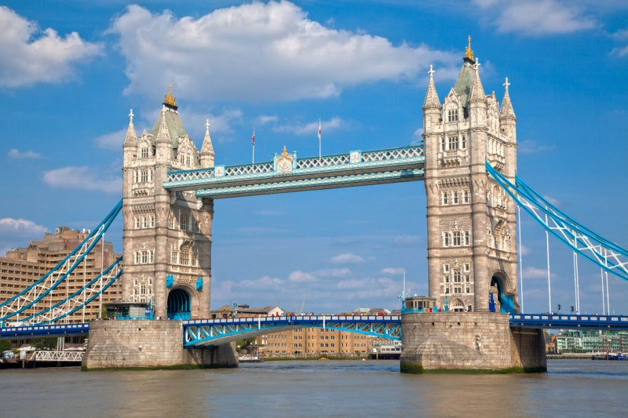

[타워 브리지와 템스강] 런던의 심장을 가로지르는 우아한 다리

런던의 중심을 가로지르는 템스강 위, 중세와 현대가 만나는 경계에 서 있는 아름다운 다리가 있다. 바로 타워 브리지(Tower Bridge)다. 런던의 수많은 다리 중에서도 가장 상징적이며, 그 존재만으로도 도시의 품격을 높이는 건축물이다. 고딕 양식의 첨탑과 푸른 철골이 조화를 이루는 이 다리는, 도시를 관통하는 템스강과 함께 런던의 심장을 이루고 있다.
타워 브리지는 1894년 개통된 도개교로, 여전히 하루 수 차례 다리가 들어올려지며 선박의 통행을 허용한다. 이 모습은 단순한 교통 기능을 넘어, 런던의 역사와 기술, 미학이 살아 숨 쉬는 순간으로 많은 여행자들의 카메라에 담긴다. 밤이면 다리에 조명이 켜지며 고풍스러운 아름다움을 더하고, 낮에는 강가를 따라 산책하는 이들의 휴식처로 제격이다.
다리 내부는 단순한 통로를 넘어선 전시 공간으로도 활용된다. 타워 브리지의 상단에는 유리 바닥 전망대가 설치되어 있어, 아래를 지나가는 차량과 보행자, 템스강 위를 떠다니는 유람선을 스릴 있게 내려다볼 수 있다. 투명한 바닥 위를 걷는 감각은 색다른 경험을 선사하며, 아이부터 어른까지 모두에게 인기 있는 포인트다.
전망대에서는 런던탑(Tower of London), 시청사(City Hall), 더 샤드(The Shard) 등 템스강 주변 주요 건축물들이 한눈에 들어온다. 이처럼 타워 브리지는 단지 한 장소를 연결하는 다리가 아닌, 런던이라는 도시의 중심축이 되어준다. 이곳에서 바라본 도시 풍경은 감탄을 자아내고, 강바람과 함께 머물던 순간은 오래도록 기억에 남는다.
템스강을 따라 걷다 보면 자연스레 이 다리와 마주치게 된다. 근처에는 버로우 마켓, 런던 브리지, HMS 벨파스트 전함, 세인트 캐서린 독 등 볼거리가 풍부해, 하루 일정의 중심지로 삼기에도 좋다. 특히 해질 무렵에는 타워 브리지를 배경으로 붉게 물든 하늘과 강이 어우러져 영화 같은 장면을 연출한다. 포토 스팟으로도 유명한 이곳은, 다양한 각도에서 찍어도 완벽한 구도를 자랑한다.
가까이에는 타워 브리지 박물관도 위치해 있으며, 다리의 기계 구조나 도개 시스템, 역사적 자료 등을 자세히 관람할 수 있다. 런던의 교통과 기술 발전사를 체험하는 교육적 공간이기도 하다.
타워 브리지 주변에는 다양한 문화 행사와 거리 공연도 자주 열리며, 밤이면 음악과 불빛, 사람들의 활기가 어우러져 더욱 생동감 있는 공간으로 변모한다. 강변을 따라 이어진 산책로와 벤치, 카페, 펍에서 바라보는 타워 브리지는 단순한 ‘건축물’이 아니라 감성 그 자체다.
런던을 여행하며 수많은 랜드마크를 지나쳤더라도, 타워 브리지를 건너는 순간은 특별하다. 걷는 발걸음 하나하나가 런던의 역사 위를 걷는 듯하고, 바라보는 시선마다 런던의 품격이 스며든다. 어느 계절, 어떤 날씨 속에서도 타워 브리지는 변함없는 아름다움으로 여행자들을 맞이한다.
여유롭게 흐르는 강물, 고요한 가운데 반짝이는 조명, 그리고 그 위를 잇는 우아한 다리. 타워 브리지는 런던이라는 도시가 품은 모든 감성을 압축해 보여주는 상징과도 같다. 런던의 심장을 관통하며, 과거와 현재를 이어주는 이 아름다운 다리 위에서, 당신도 런던을 진심으로 느낄 수 있을 것이다.